Wordのはがき宛名面印刷：Excel住所録から縦書き・漢数字・連名で作る方法
年賀状や案内はがきの宛名面を、Excelの住所録から作ります。縦書き・漢数字・連名まで、ウィザードの手順と注意点を説明します。
「差し込み文書」→「はがき印刷」→「宛名面の作成」のウィザードで作ります。連名は住所録に列があっても自動で入らないことがあるため、完成後に確認して追加します。
やさしい（Lv.2）
- 住所録を準備
- ウィザードで作成
- 列と連名を確認
- 試し印刷
目次
完成イメージ
Wordの「はがき宛名面印刷ウィザード」は、画面の質問に答えるだけで、郵便番号の枠に合わせた宛名面を作ります。番地は「1-2-3」ではなく「一－二－三」のような漢数字にでき、連名（山田 太郎 様・花子 様）も入れられます。
実際に使うと、連名の欄が自動で入らない、長い住所が折り返す、といったことが起きました。その対処も説明します。
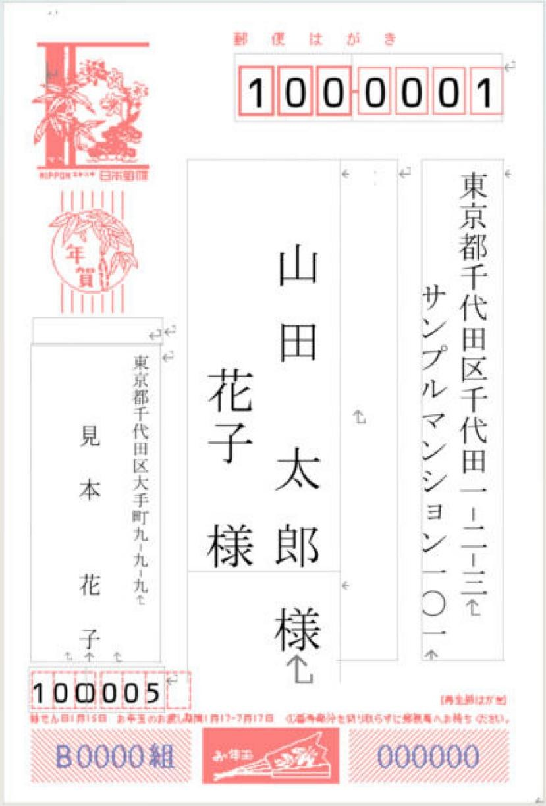
作業の順番
最初にExcel住所録、はがきの種類、差出人情報を用意します。差出人欄に以前使った住所が残る場合があるため、ウィザードの既定値も確認します。
- Excelの氏名・郵便番号・住所・敬称を整えます。
- ウィザードで用紙、縦横、数字の表記、差出人、住所録を順に指定します。
- 完成直後に「フィールドの対応」を確認します。列を対応付けても、連名欄が文書へ自動配置されるとは限りません。
- 連名なし・連名あり・会社あて・長い住所の4種類をプレビューします。
- 「個々のドキュメントの編集」→「すべて」で完成文書にし、用紙と向きを確認して1枚だけ試し印刷します。
ウィザードが見当たらないMac版・Web版では、このWindows用画面と同じ操作にはなりません。
住所録（Excel）の準備
撮影には次の列を持つExcelの住所録を使いました。1行目が見出し、2行目から1人1行です。
| 列の見出し | 入れるもの | 例 |
|---|---|---|
| 氏名 | 姓と名の間に空白 | 山田 太郎 |
| 敬称 | 空欄なら「様」になる（後述） | 様 |
| 連名 | 連名の人の名（姓は書かない） | 花子 |
| 連名敬称 | 連名の人の敬称 | 様 |
| 郵便番号 | 文字列で「100-0001」の形 | 100-0001 |
| 住所_1 | 都道府県〜番地 | 東京都千代田区千代田1-2-3 |
| 住所_2 | 建物名・部屋番号 | サンプルマンション101 |
| 会社・部署 | 会社あての場合だけ | テスト工業株式会社／総務部 |
- 郵便番号は先頭のゼロが消えないよう、文字列で入れます（郵便番号のゼロが消える原因と対処）。
- 住所は2つの列に分けておくと、宛名面で行を分けられます。1つの列に長く入れると、枠の中で折り返します（後述）。
- 番地の数字は半角のままでかまいません。漢数字への変換はウィザードの設定で行います。
- 保存して、Excelを閉じてからウィザードを始めます。
手順1はがき宛名面印刷ウィザードを始める
Wordの新しい文書で、「差し込み文書」タブ →「はがき印刷」→「宛名面の作成」を選びます。
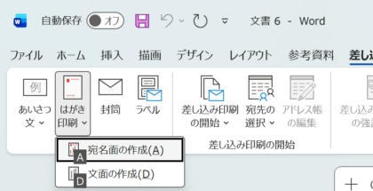
ウィザードが開きます。「次へ」で進みながら、次の順に設定します。
はがきの種類
年賀/暑中見舞い・通常はがき・エコーはがき・往復はがきから選びます。
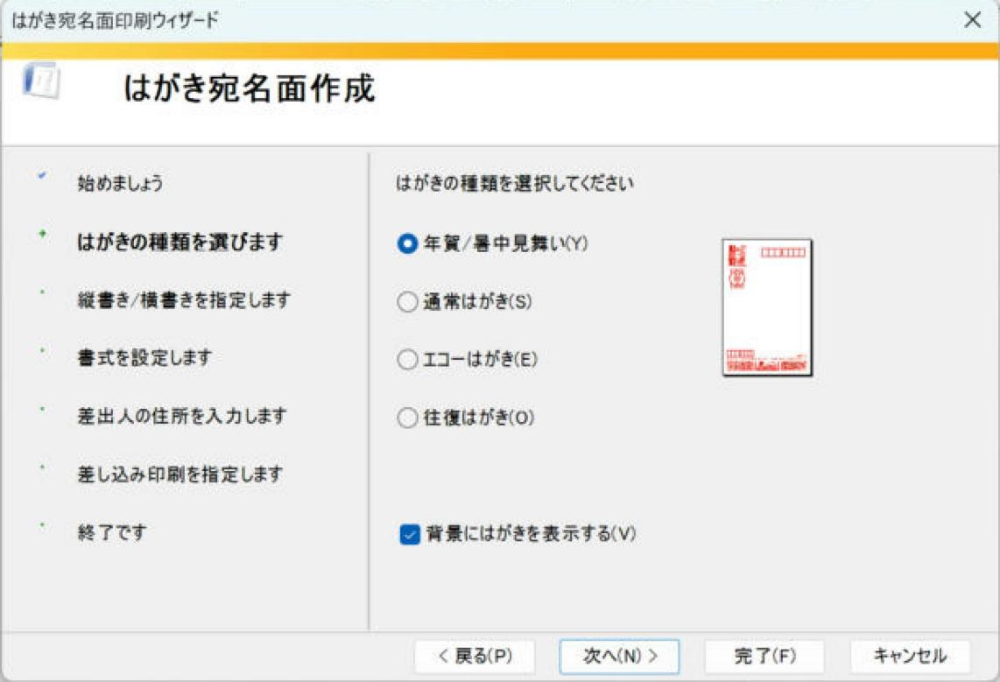
縦書き／横書き
「縦書き」を選びます。
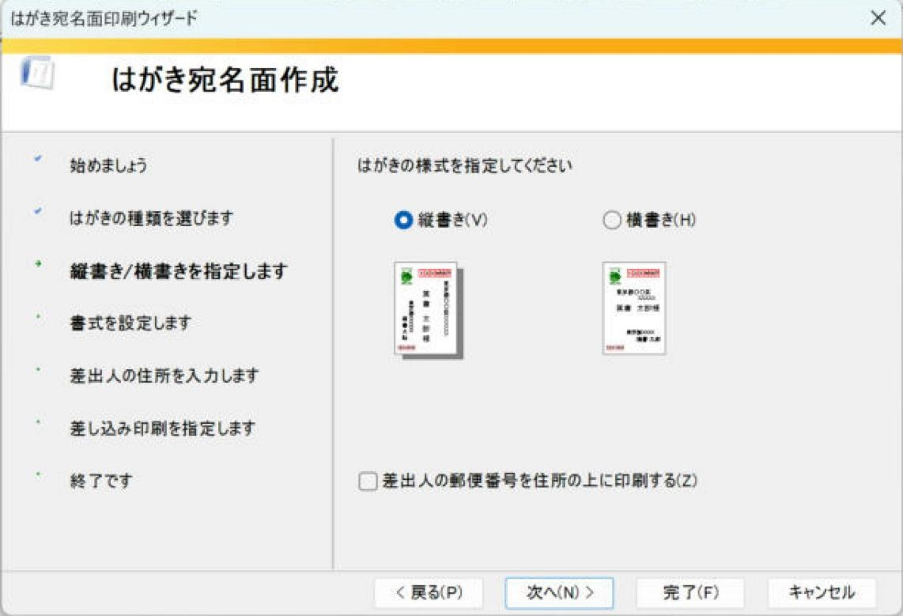
書式（漢数字への変換）
フォントを選び、「宛名住所内の数字を漢数字に変換する」と「差出人住所内の数字を漢数字に変換する」をオンにします。
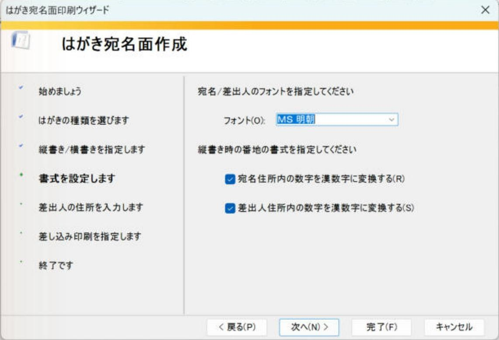
差出人
差出人を印刷する場合は、氏名・郵便番号・住所などを入力します。
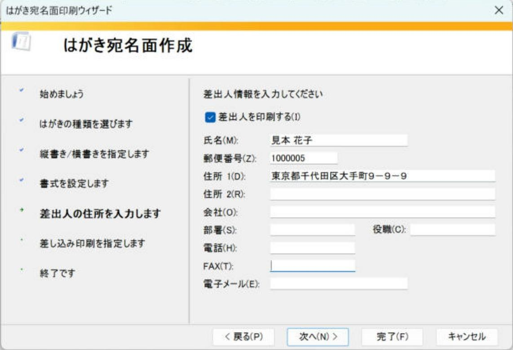
差し込み印刷（住所録）
「既存の住所録ファイル」を選び、「参照」でExcelの住所録を選びます。
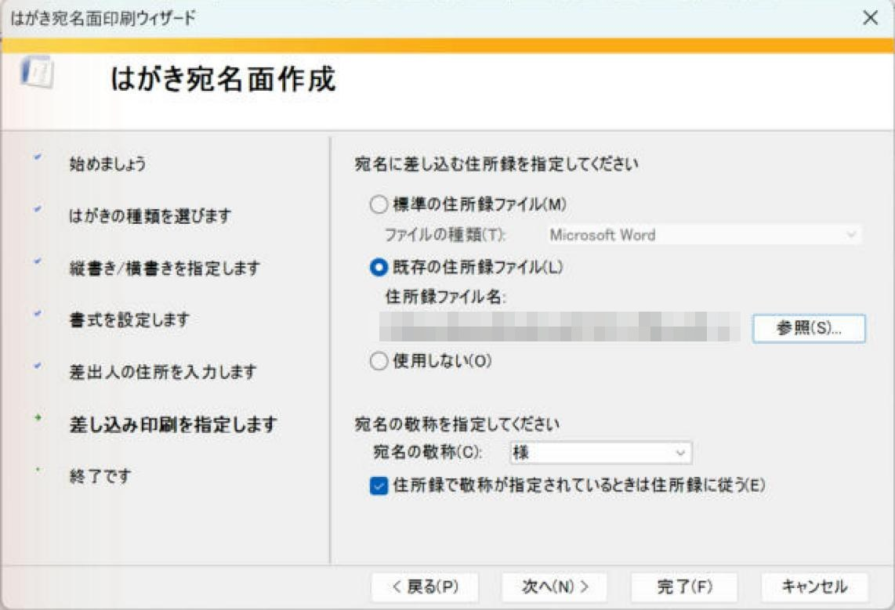
- 「住所録で敬称が指定されているときは住所録に従う」をオンにします。敬称の列に「御中」などがある人はそれが使われ、空欄の人は「様」になります。
- 「完了」を押すと「テーブルの選択」が開きます。住所録のシート（撮影では「住所録$」）を選び、「先頭行をタイトル行として使用する」をオンのまま「OK」を押します。
手順2フィールドの対応を確かめる
住所録のどの列が、宛名面のどの欄に使われているかを確かめます。「差し込み文書」タブ →「フィールドの対応」を開きます（「はがき宛名面印刷」タブの「フィールドの一致」でも同じ画面が開きます）。
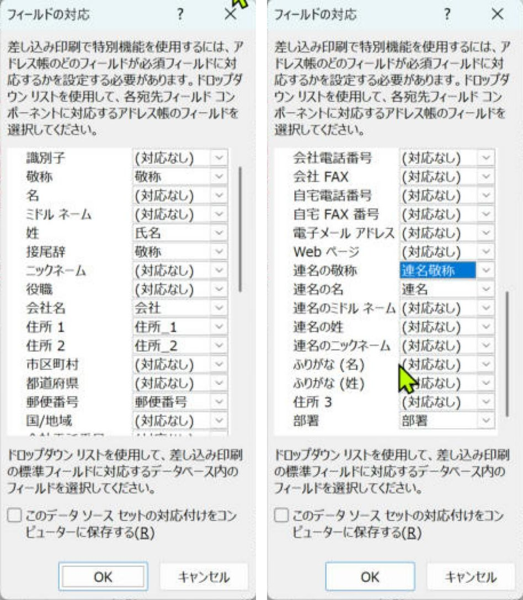
Excelの見出しがWordの名前と少し違うと、（対応なし）になります。その欄は宛名面に何も出ないので、ここで列を選びます。
手順3結果のプレビューで確かめる
「差し込み文書」タブの「結果のプレビュー」をオンにすると、住所録の1人目が宛名面に表示されます。◀・▶ のボタンで次の人に切り替えます。
フィールドコード（{ MERGEFIELD … }）がそのまま表示される場合は、Alt＋F9で結果の表示に切り替えます。
連名の欄が入っていなかったとき
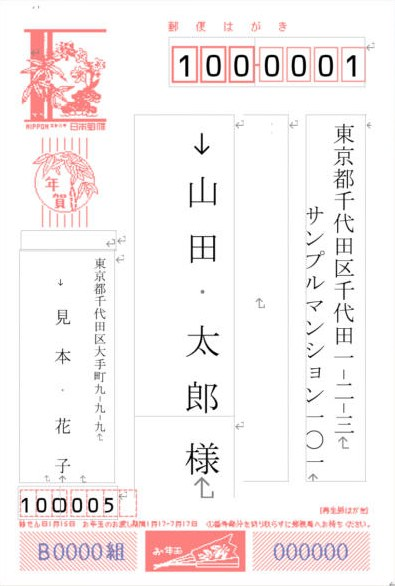
撮影した環境では、住所録に「連名」「連名敬称」の列があっても、ウィザードが作った宛名面には連名の欄が入りませんでした。フィールドの対応を直した後も同じだったため、宛名の枠に連名を自分で追加しました。
- 「結果のプレビュー」をオンにしたまま、宛名の名前（太郎）の最後をクリックし、Endで行の最後に移動します。
- Enterを押して、名前の左に新しい行を作ります。
- 「差し込みフィールドの挿入」から「連名」を入れ、空白を1つ入力して「連名敬称」を入れます。
- Homeで行の先頭に移動し、全角の空白をいくつか入れて、連名の位置を名（太郎）の高さにそろえます（撮影では4つ）。
確認連名がない人（連名の列が空欄の人）は、この行には何も出ません。撮影では2人目の佐藤 次郎さん（連名なし）で、名前の左が空になることを確認しました。
会社あての宛名と、長い住所
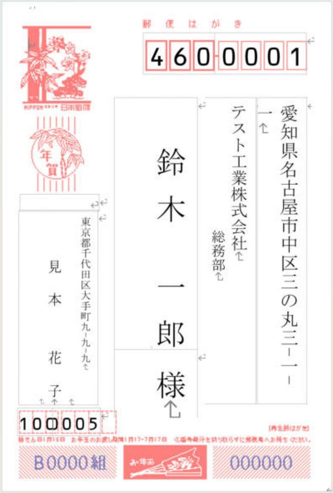
- 住所が折り返すときは、住所録で番地の途中で住所_2に分けるか、「はがき宛名面印刷」タブの「レイアウトの微調整」で枠の大きさを変えます。
- 漢数字への変換では、「10」は「十」ではなく「一〇」になりました（「梅田2-10-5」→「梅田二－一〇－五」）。
- 郵便番号は漢数字にならず、郵便番号の枠に1桁ずつ入ります。
手順4印刷する
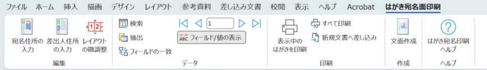
- まず「新規文書へ差し込み」で全員分の宛名面を新しい文書に作り、名前・敬称・連名・住所の折り返しを1枚ずつ確認します。
- 普通紙に1枚だけ印刷し、はがきと重ねて郵便番号の枠や宛名の位置を確かめます。
- 位置が合っていたら、はがきに印刷します。プリンターの設定で用紙を「はがき」にします。
背景のはがきの絵が印刷されないか、郵便番号の枠に合うかは、お使いのプリンターで普通紙に試し印刷して確認してください。
よくあるつまずき
| 症状 | 確認すること |
|---|---|
| 名前や住所が出ない欄がある | 「フィールドの対応」で、その欄が（対応なし）になっていないか。 |
| 連名が出ない | 宛名の枠に連名のフィールドがあるか（この記事の手順3）。「連名の名」「連名の敬称」が住所録の列に対応しているか。 |
| 番地が漢数字にならない | ウィザードの書式で「宛名住所内の数字を漢数字に変換する」をオンにしたか。縦書きを選んでいるか。 |
| 郵便番号の先頭のゼロが消える | Excelで郵便番号を文字列にしているか。 |
| 差出人が知らない名前になっている | ウィザードの差出人の氏名に、最初から入っていた名前が残っていないか。「はがき宛名面印刷」タブの「差出人住所の入力」で直せます。 |
実機で確認した内容
- 確認日：2026-11-01
- 環境：Windows版 Word（Microsoft 365）
- 確認した範囲：画面上のプレビュー（実画面の撮影）。
- 確認していないこと：Mac版・Web版、紙への印刷、郵便番号の枠との位置合わせ。環境により結果が異なる場合があります。
更新履歴
- 2026-11-03：本文を書き直し、手順の説明を追加。